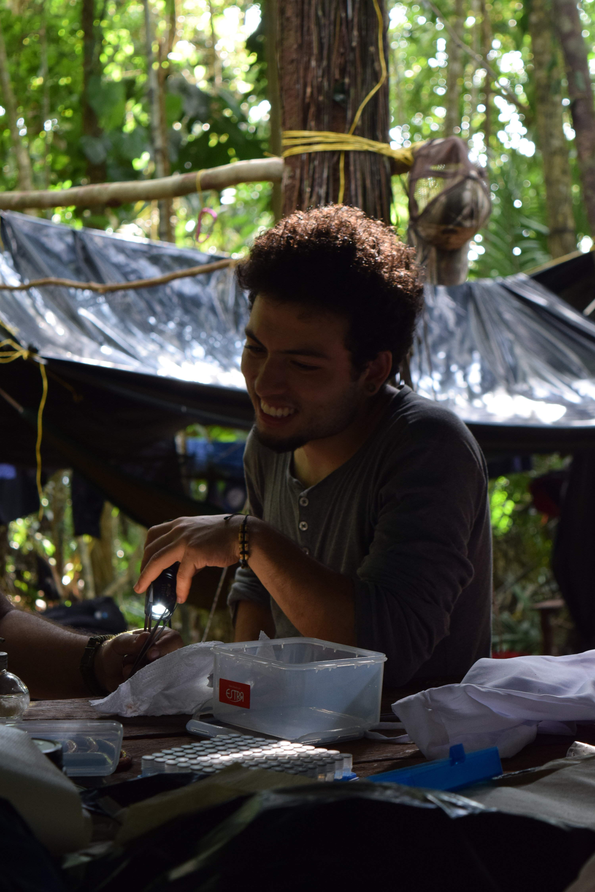
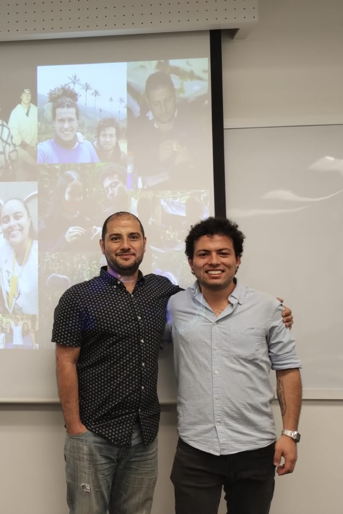
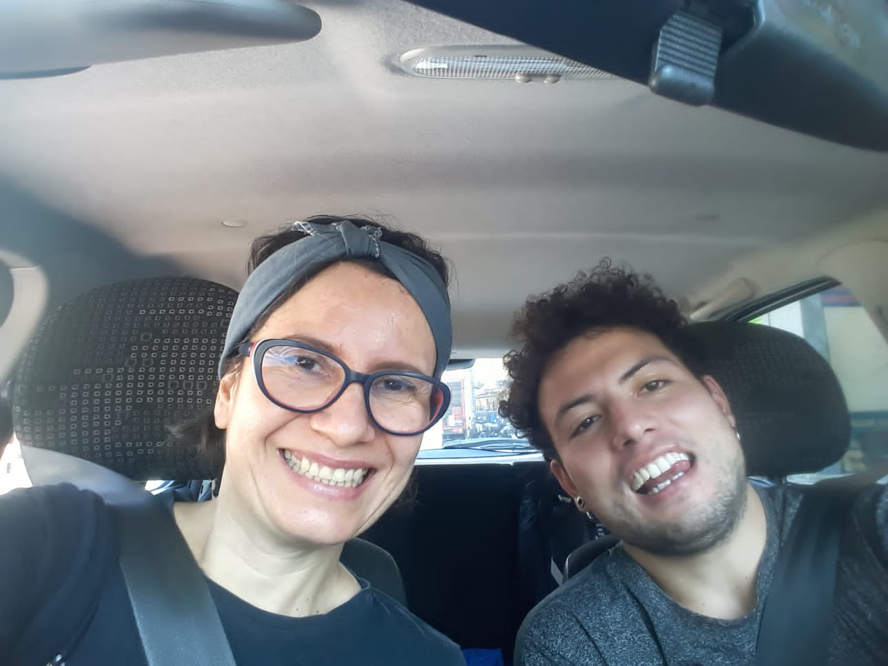
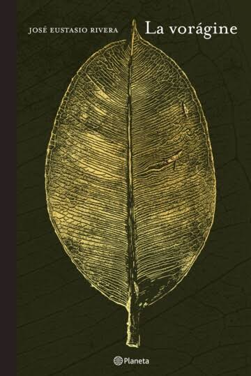
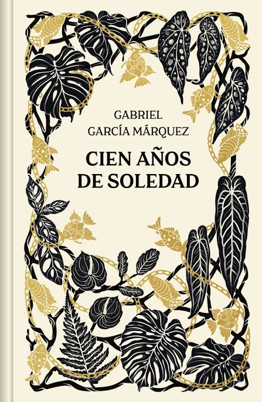
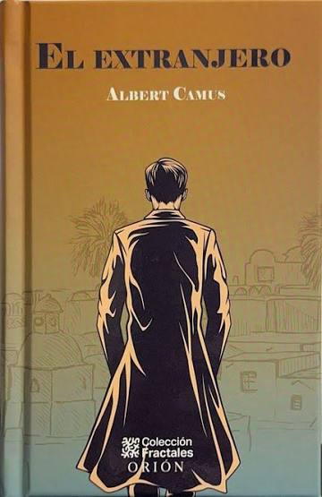
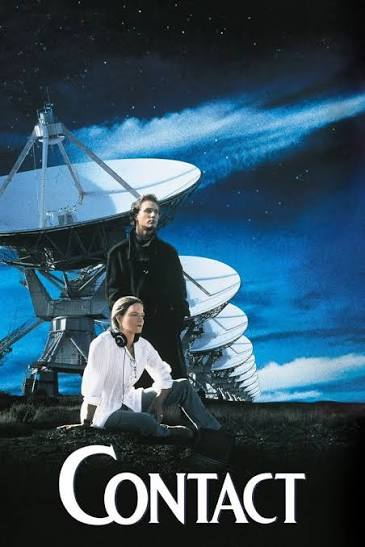
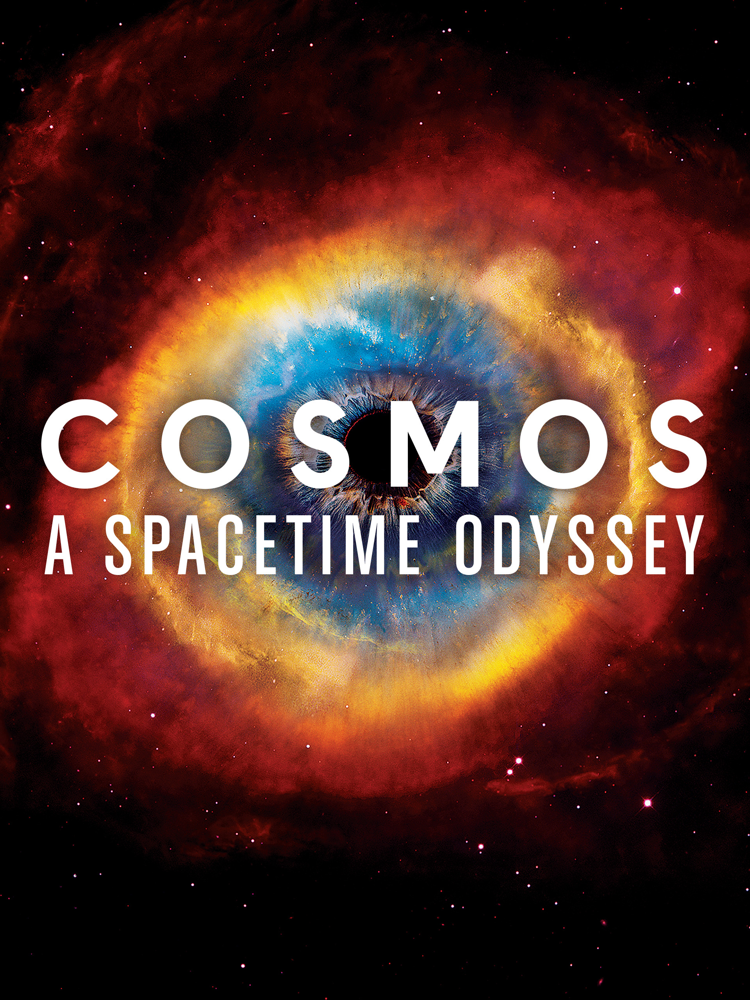

About me

My story
I am a biologist from Colombia, born into a family with deep rural roots. My father and my grandparents were displaced by violence around the time of my birth, forcing my family to seek safety in Medellín. Life in the city was difficult, and we ended up moving back and forward between the city and the countryside. There, I attended a rural school and walked for more than four hours each day through patches of jungle, rivers, and pastures. Along the way, I discovered the natural world with fascination — watching tadpoles in the on the side of the road, chasing birds and snakes, or sometimes running in terror from fierce cows. Those walks nurtured my curiosity for nature.
Later, we returned to the city and I finished high school. Thanks to my strong results on the national exams, I earned a government scholarship and became the first in my family to attend university. While studying biology, I returned to the same village of my childhood to conduct fieldwork. Walking those familiar paths with colleagues, I encountered a poison dart frog that I had heard—and that is part of the soundscape of my childhood—but had never seen: Andinobates opisthomelas. Its bright red color captivated me instantly—so much so that I ended up doing my thesis on it.
To support myself during university, I worked alongside my studies—always seeking opportunities related to biology. I participated in consulting projects, conducted environmental fieldwork and wrote impact assessments, which sharpened my analytical skills. I also had the privilege of working in the science education and outreach section at the Museo de Ciencias Naturales de La Salle, where I strengthened my skills for to communicate science to the world. In my free time there, I immersed myself in the specimen reference collection, examining and measuring specimens that would ultimately become an essential part of my thesis.
For my mandatory internship, I worked at an ecotourism hotel on Colombia's Pacific coast. I guided whale-watching activities and forest interpretation walks, while also conducting independent fieldwork on amphibians and reptiles in one of the most biodiverse regions on the planet. This work served as the basis f or subsequently producing a couple of publications.
Throughout my undergraduate years, I was fortunate to be mentored by Professor Juan Camilo Arredondo, a PhD graduate from the Universidade de São Paulo (USP). He consistently encouraged me to do research and publish, highlighting the strength of a well-rounded resume. Now I'm in search of a postgraduate in which I aspire to deepen my expertise in taxonomy, bioacoustics, and systematics, and to contribute to the conservation of Colombia's extraordinary biodiversity.
A scientist is, first and foremost, a human being. Science is often presented as neutral, but the people who do it never are. Scientists are cultural and political subjects whether we admit it or not. I am shaped by the world around me like anyone else, and science is never practiced in a vacuum. We carry our histories, values, and convictions into the lab and the classroom. Rather than hide that, I prefer to be open about it. Below are the teachers, films, books, and m usic that have shaped how I think about culture, politics, and society. Some changed my mind; others simply put words to what I already felt. I honestly can't always tell which is which, and that is part of the point.
Long before I knew what kind of scientist I wanted to be, I met people who showed me what a scientist could be. Some taught me methods and techniques. Others taught me, without meaning to, how to treat students, how to disagree, and how to care about what happens outside the lab. I don't think I would think the way I do without them. Whatever I do well, part of it started in their classrooms. Whatever I get wrong is mine.


I wish I could say I’m an avid reader, but sadly, I’m slow; I lose my place and have to go back; I struggle even to start books—and sometimes to finish them. It’s true there have been books I devoured at an incredible pace, but that isn't the norm for me. Nevertheless, reading is fundamental to my life. I firmly believe it is essential for humanity, too—if only we, as a society, read more. I try to choose what I read carefully, because if you don't read much, you should at least make sure the little you do read is worthwhile.
Here you will find science books, but also literature, because ultimately, everything is connected.



For me, movies have been a form of education—not formal instruction per se, but an introduction to ideas or historical moments I was previously unaware of, which I later went on to explore further—as well as a source of emotional healing that transcends mere entertainment. I fervently believe that well-chosen films can be very powerful in developing empathy and serving as a cognitive and creative stimulus.

For me, unlike movies, TV series are a way to satisfy that gossipy urge to learn details—often real, sometimes fictional—about history and people. Documentaries, on the other hand, are a splendid way to learn and to marvel, but also to reflect and question things.

Music, of course, cannot be left out. And although there is no such thing as "scientific music" per se, these two spheres have been connected for millennia and complement each other in various ways. For any scientist, music is an integral part of the work; we would go (even more) mad without it. Personally, I love listening to Cumbias, Boleros, Porros, Currulaos, Vallenatos, Joropo and Salsa—among many other genres—whether I am out in the field working with nature or in the laboratory, marveling at what I am learning and discovering.This list could easily be as long as my playlist, but here I’ve selected some of the songs and artists that move me the most.